AWS Certified Generative AI Developer — Professional
AWS Cloud Foundations
The AWS that AIP-C01 assumes you already know. Regions, IAM, S3, EC2, VPC, databases, Lambda, and the services that connect them.
Read inward. The claim is the outer shell. Under it: the mechanism, the numbers, a worked scenario, and the exam trap.
Outer layer Claim
Start here
The AWS that AIP-C01 assumes you already know. Regions, IAM, S3, EC2, VPC, databases, Lambda, and the services that connect them.
Identity, encryption, network path, and audit are different controls. One of them does not replace the others.
Original diagram. Service roles follow the AIP-C01 exam guide in-scope list: IAM, KMS, Amazon VPC, AWS PrivateLink, CloudTrail, CloudWatch.
IAM decides who may call the API. A guardrail does not.
KMS encrypts data at rest where the service supports a customer key.
A VPC endpoint keeps the call off the public internet.
CloudTrail records who called which API.
Invocation logs and CloudWatch hold the prompt content and the block metrics.
Mechanism
The AWS that AIP-C01 assumes you already know. Regions, IAM, S3, EC2, VPC, databases, Lambda, and the services that connect them. One clean pass, small ideas first, then the full picture at the end.
Numbers and limits
Volatile. Quotas, model IDs, and prices move. The prose below was checked against AWS documentation on 2026-09-28. Re-check any quota or price before exam day.
This section states no service quota. Do not memorize a number the text does not give you.
Worked scenario
Work “Start here” against one stem. Name the constraint (freshness, citation, latency, a cost ceiling, or a control that must block) and pick the smallest managed mechanism that meets every constraint.
Exam trap
Exam trap: a real service used for the wrong job, or a heavier ladder rung than the stem requires. Match the verb in the stem — cite, act, block, cheapen, or measure — to one mechanism here.
Outer layer Claim
How to use this volume
You forgot the basics. That is normal and fixable. This volume rebuilds them in the order AWS itself is built.
Retrieval-augmented generation keeps facts outside the weights. The model answers from chunks it can cite.
Original diagram. The flow follows Amazon Bedrock Knowledge Bases: ingest, chunk, embed, retrieve, generate.
Ingestion loads documents from a source such as S3.
Chunking splits them. The strategy is fixed on the data source.
One embedding model writes vectors into a store.
A query embeds with the same model and fetches near chunks.
The model answers from those chunks and returns citations.
Mechanism
You forgot the basics. That is normal and fixable. This volume rebuilds them in the order AWS itself is built. First the world map, then identity, then storage, compute, network, and data. Last the services that connect them.
The last two sections wire everything into a real GenAI architecture. That is exactly how AIP-C01 tests this material: never as trivia, always inside a scenario.
AIP-C01 never asks "what is S3?" It asks: "A team fine-tunes a model weekly, keeps 7 years of training data for audits, and reads last month's data often. Cheapest compliant design?" The answer needs S3 storage classes, lifecycle rules, and KMS. That is why this volume exists.
Numbers and limits
Volatile. Quotas, model IDs, and prices move. The prose below was checked against AWS documentation on 2026-09-28. Re-check any quota or price before exam day.
This section states no service quota. Do not memorize a number the text does not give you.
Worked scenario
Work “How to use this volume” against one stem. Name the constraint (freshness, citation, latency, a cost ceiling, or a control that must block) and pick the smallest managed mechanism that meets every constraint.
Exam trap
The last two sections wire everything into a real GenAI architecture. That is exactly how AIP-C01 tests this material: never as trivia, always inside a scenario.
AIP-C01 never asks "what is S3?" It asks: "A team fine-tunes a model weekly, keeps 7 years of training data for audits, and reads last month's data often.
Outer layer Claim
Watch first: the full foundations course
One free course covers nearly everything in this volume. Andrew Brown teaches the Cloud Practitioner syllabus on freeCodeCamp.
Region, AZ, edge location nesting: a region with three AZs, all under one edge location layer.
Three layers of the world map: a region holds the AZs, edge locations sit on top. Source: original figure for the AWS AIP-C01 Study Guide.
Region, AZ, edge location nesting: a region with three AZs, all under one edge location layer.
Mechanism
One free course covers nearly everything in this volume. Andrew Brown teaches the Cloud Practitioner syllabus on freeCodeCamp. It is long (about 14 hours), so treat it as a companion: watch a chapter when a section below feels thin, at 1.5x or 2x.
AWS Certified Cloud Practitioner (CLF-C02): freeCodeCamp / Andrew Brown
AWS Certified Cloud Practitioner full course Click to load this video from YouTube
Why this one: it is the 2024 CLF-C02 refresh (not the older CLF-C01 cut). It walks through shared responsibility, IAM, S3 storage classes, EC2 pricing, and Aurora with exam phrasing. It ships with a free practice exam. Chapters are timestamped, so you can jump straight to VPC or KMS.
Read outside in. A region is a geographic area. It holds two or more AZs, which are separate data centers. Edge locations are hundreds of cache points in cities. High availability means two or more AZs.
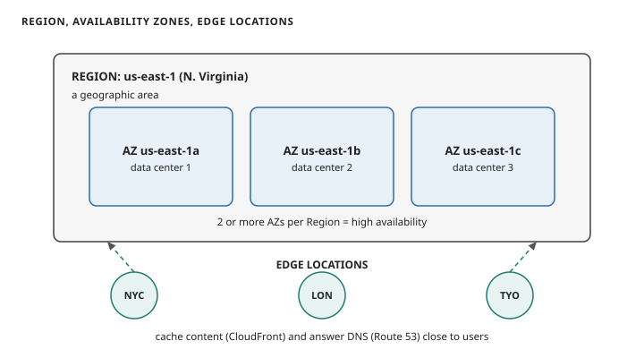
Region us-east-1 holding three availability zones, with edge locations in NYC, London, and Tokyo caching content near users.
Read top to bottom. The Region is the geographic area. Inside it, two or more AZs are separate data centers. Edge locations are not regions: they cache content and answer DNS close to users. High availability means two or more AZs.
A Region is a geographic area, like us-east-1 (N. Virginia) or eu-west-1 (Ireland). Each Region is fully independent. AWS does not copy your data between Regions unless you ask it to. Pick a Region for four reasons: closeness to your users (latency), law (some data must stay in a country), price (same service can cost different amounts per Region), and availability (new services land in big Regions first).
An Availability Zone (AZ) is one or more discrete data centers inside a Region, with its own power, cooling, and network. The name is the Region code plus a letter: us-east-1a, us-east-1b. AZs in a Region sit close together and connect over fast private fiber. The exam's favorite sentence is "deploy across multiple AZs". That is how you survive a data center fire.
Edge locations are the third layer: small points of presence in hundreds of cities. They do not run your app. They cache content (CloudFront) and answer DNS close to users. DNS is the Domain Name System. Route 53 is AWS's DNS service.
Region = where in the world. AZ = which buildings in that place (use two or more). Edge = cache near the user. "High availability" on the exam almost always means multi-AZ.
A startup serves users in Berlin and must keep all customer data inside the EU. Their app runs on one EC2 instance (a rented virtual machine) in us-east-1a. What is the smallest set of changes that fixes both the latency and the compliance problem?
A)Add a second instance in us-east-1b and enable CloudFront.
B)Move the workload to the eu-central-1 Region and run instances in at least two AZs.
C)Add edge locations in Berlin and encrypt the instance with KMS.
D)Copy the data to S3 in eu-west-1 and keep the instance where it is.
Correct: B. Data must live in the EU, so the Region has to change. us-east-1 is Virginia. Two AZs give availability, and eu-central-1 (Frankfurt) is close to Berlin.
A is wrong: more AZs in Virginia do not move data to the EU. C is wrong: you cannot "add" edge locations, and caching does not move the data store. D is wrong: the data would sit in two places, still including the US.
Next: the deal you sign for living in this world. It is called shared responsibility.
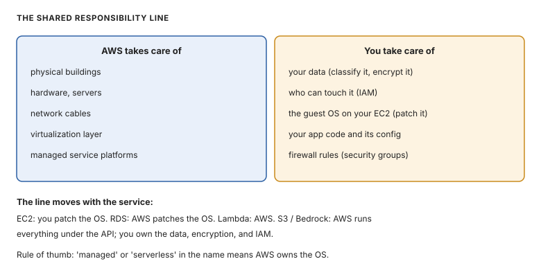
Shared responsibility: AWS of the cloud on the left, you in the cloud on the right.
Read the two columns as a contract. The line moves with the service: on EC2 you patch the OS; on RDS and Lambda, AWS does. 'Who patches the OS' is a classic exam question.
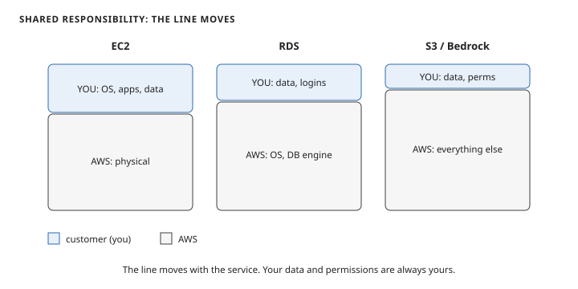
Shared responsibility across EC2, RDS, and S3: the customer owns more on EC2 and only data and permissions on S3.
Read left to right. On EC2 you own the OS, apps, and data. On RDS AWS takes the OS and the database engine. On S3 and Bedrock AWS runs everything under the API. You always own your data and your permissions.
The line moves with the service. On EC2 (rented raw computers), you patch the operating system yourself. On RDS (managed database), AWS patches the OS. You still control the data, passwords, and network access. On S3 or Bedrock (Amazon's API service for foundation models; fully managed), AWS runs everything under the API. You control the data, encryption settings, and IAM permissions.
"Who patches the OS?" is a classic. EC2: you. RDS: AWS. Lambda: AWS. If the service name contains "managed" or "serverless", AWS owns the OS. If you got a virtual machine, you own it.
A company runs its model-serving API on EC2 and stores training data in S3. After a security review, two tasks appear. (1) Patch the OS on the servers. (2) Make sure only the training job role can read the training bucket. Who owns each task?
A)AWS owns both; the customer only pays the bill.
B)The customer owns both.
C)AWS owns (1), the customer owns (2).
D)The customer owns (1), AWS owns (2).
Correct: B. EC2 is your virtual machine, so OS patching is yours. S3 bucket access is data-level access control, always yours.
A is wrong: AWS never manages your data access or your EC2 guest OS. C is wrong: AWS does not patch your EC2 instances. D is wrong: bucket permissions are the customer's job, not AWS's.
Next: IAM, identity and access management.
Numbers and limits
Volatile. Quotas, model IDs, and prices move. The prose below was checked against AWS documentation on 2026-09-28. Re-check any quota or price before exam day.
One free course covers nearly everything in this volume. Andrew Brown teaches the Cloud Practitioner syllabus on freeCodeCamp.
Worked scenario
Each question in this section is the worked scenario. Read the last sentence of the stem first. That sentence is the constraint.
Exam trap
Edge locations are the third layer: small points of presence in hundreds of cities. They do not run your app.
Outer layer Claim
3. IAM: identity and access management
The deal splits security down the middle. IAM enforces your half, at every entry point.
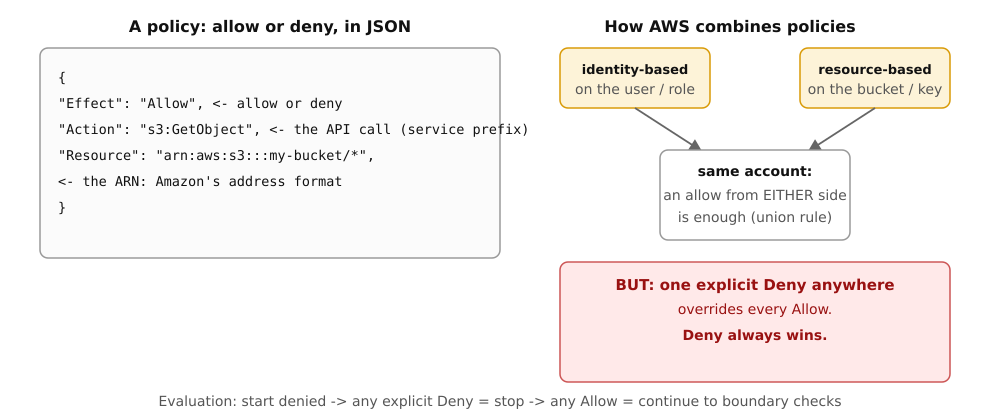
IAM policy anatomy: Effect allow or deny, Action naming API calls, Resource using ARN addresses; identity-based and resource-based policies combine with a union rule, and any explicit Deny overrides every Allow
A policy in plain English: allow or deny, on API calls, on resources addressed by ARN. An allow from either the identity side or the resource side is enough, but one explicit Deny anywhere overrides everything. Source: original figure for the AWS AIP-C01 Study Guide.
IAM policy anatomy: Effect allow or deny, Action naming API calls, Resource using ARN addresses; identity-based and resource-based policies combine with a union rule, and any explicit Deny overrides every Allow
Mechanism
The deal splits security down the middle. IAM enforces your half, at every entry point.
Every single AWS request passes through IAM (Identity and Access Management) first. Examples of AWS callers: your Lambda (serverless code) calling Bedrock, your laptop listing an S3 bucket (object storage), an EC2 instance (a rented virtual machine) reading a file. Each service gets its own section below. For now, treat them as examples of AWS callers. IAM answers two questions: who are you (authentication), and what may you do (authorization).
Three characters do the work. A user is a permanent identity, usually a person. A group is a bundle of users that share permissions. A role is a temporary badge anyone trusted can pick up, use, and put back.
alice (user) ──┐
├──> group "developers" ──> policy: read S3, run EC2
bob (user) ────┘
EC2 instance ── assumes ──> role "app-server" ──> policy: read one S3 bucket
^
Lambda function ── assumes ───────┘ (temporary keys, auto-rotated)
Why roles matter: a user carries long-term keys. If those leak, they work until you revoke them. A role hands out temporary keys that die on their own, usually within hours. So the rule is simple. People sign in with short-lived sessions (IAM Identity Center). Programs and services use roles. Long-term access keys are a last resort.
The root user is the account itself. It can do everything, including closing the account. Lock it down on day one: strong password, MFA (multi-factor authentication: a second proof of identity, like a code from your phone), no access keys, and never use it for daily work. A few tasks only root can do, like changing the support plan or closing the account. The exam loves asking which tasks need root.
Policies: the rule sheets
A policy is a JSON document that says allow or deny. Here is one, as a Python dict you could hand to boto3:
policy = {
"Version": "2012-10-17", # policy language version; always this value
"Statement": [ # one or more rules
{
"Effect": "Allow", # Allow or Deny
"Action": [ # which API calls this rule covers
"s3:GetObject", # read a file
"s3:ListBucket", # list a bucket's contents
],
"Resource": [ # which buckets/objects it applies to
"arn:aws:s3:::training-data",
"arn:aws:s3:::training-data/*",
],
# "Condition": {...} # optional: only when (IP, MFA, time...)
}
],
}
Walkthrough: Effect decides allow or deny. Action names API calls, and the service prefix tells you which service (s3:, ec2:, bedrock:). Resource uses ARNs, Amazon's address format for everything. The /* means "all objects inside the bucket". No Condition here, so the rule always applies.
Two flavors of policy. Identity-based policies attach to users, groups, or roles and say what that identity may do. Resource-based policies attach to the thing itself (an S3 bucket policy, a KMS key policy) and say who may touch it. Within one account, an allow from either side is enough. That is the union rule.
Managed policies are reusable rule sheets. AWS-managed (like ReadOnlyAccess) are maintained by AWS. Customer-managed are yours. Inline policies belong to exactly one identity and die with it.
How AWS decides: deny wins
The evaluation order is short enough to memorize:
Start: everything is denied (implicit deny).
If any policy has an explicit Deny for this request, stop. Denied.
Otherwise, if any policy has an explicit Allow, continue to the boundary checks.
Boundaries (permission boundaries, SCPs (Service Control Policies: rules set at the organization level), and session policies) can only shrink permissions, never grow them.
If all checks pass, allowed.
Permission boundaries: the ceiling
A permission boundary is a managed policy that caps what an identity can ever do. The real permissions are the overlap of the identity's policies and the boundary. Admins use it to delegate safely: "you may grant your team anything, but never more than this ceiling."
IAM Identity Center: SSO for humans
Real companies do not make an IAM user per employee. They connect their company login (Google Workspace, Okta, Active Directory) to IAM Identity Center (AWS's SSO, or single sign-on, service for the workforce). People get short-lived AWS access through permission sets. One login, many accounts, no long-term keys floating around.
Humans get SSO through IAM Identity Center: one company login, permission sets, short-lived access. Machines and services get IAM roles with temporary auto-expiring keys.
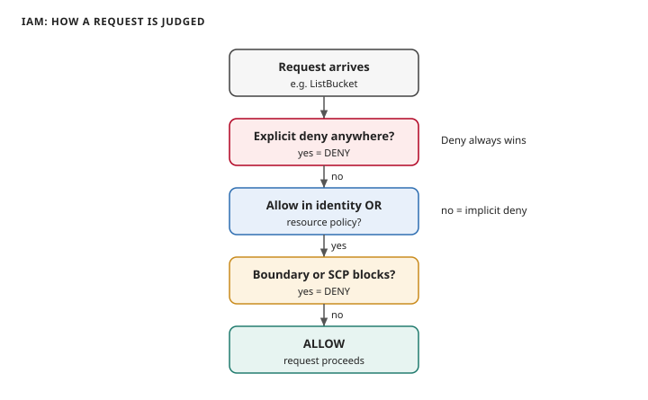
IAM policy evaluation order: explicit deny first, then an allow must exist, then boundaries and service control policies can still block.
Read top to bottom. An explicit deny anywhere ends the request. Next, an allow must exist in the identity policy or the resource policy. Last, a permissions boundary or SCP can still block it. No allow means implicit deny.
Four patterns cover nearly every IAM exam question. (1) "An EC2 instance needs to read from S3": give the instance an IAM role (instance profile), never put access keys into the code. (2) "A developer needs admin for two hours": let them assume a role, not a second user. (3) "Let team leads create users but never touch billing": permission boundary on the team leads. (4) "A partner company needs read access to our bucket": cross-account role, or a bucket policy naming their account.
Traps: groups cannot contain groups. A policy with only Deny and no Allow grants nothing. Deleting a user deletes everything attached, including their access keys. This can break running apps that used those keys. That is why apps should use roles.
Users are for people in small setups. Groups bundle users. Roles are for everything temporary. Deny beats allow. Boundaries only shrink. Humans get SSO. Machines get roles.
A Lambda function resizes images uploaded to an S3 bucket and writes thumbnails to a second bucket. The function currently uses an access key stored in an environment variable, and the security team flags it. What is the correct fix?
A)Rotate the access key every 30 days with a second Lambda function.
B)Attach an IAM role to the Lambda function with s3:GetObject on the source bucket and s3:PutObject on the destination bucket.
C)Make both buckets public and remove the access key.
D)Move the access key into AWS Secrets Manager and keep using it.
Correct: B. Lambda assumes an execution role automatically; no keys needed. Scope the policy to exactly the two buckets and the two actions.
A is wrong: rotation reduces the window but the design is still wrong. Keys should not exist here. C is wrong: public buckets for an internal pipeline invite a breach. D is wrong: Secrets Manager protects the key but the function still does not need a key at all.
A platform team lets product teams create their own IAM users. Leadership wants a guarantee that no product-team user can ever delete production databases, no matter what policies the product teams write. Which control gives that guarantee?
A)An SCP on the organization root.
B)A permissions boundary attached to every product-team user and role.
C)A strong password policy with MFA enforced.
D)An identity-based policy with an explicit deny on rds:DeleteDBInstance.
A permissions boundary caps the maximum permissions of the identity that uses it, so team-written policies can never exceed it.
D is wrong: the product team could attach another policy or edit this one. An identity policy does not cap future policies the way a boundary does.
Next: S3, object storage.
Numbers and limits
Volatile. Quotas, model IDs, and prices move. The prose below was checked against AWS documentation on 2026-09-28. Re-check any quota or price before exam day.
Every single AWS request passes through IAM (Identity and Access Management) first. Examples of AWS callers: your Lambda (serverless code) calling Bedrock, your laptop listing an S3 bucket (object storage), an EC2 instance (a rented virtual machine) reading a file.
Worked scenario
Each question in this section is the worked scenario. Read the last sentence of the stem first. That sentence is the constraint.
Exam trap
The root user is the account itself. It can do everything, including closing the account. Lock it down on day one: strong password, MFA (multi-factor authentication: a second proof of identity, like a code from your phone), no access keys, and never use it for daily work.
A permission boundary is a managed policy that caps what an identity can ever do. The real permissions are the overlap of the identity's policies and the boundary.
Real companies do not make an IAM user per employee. They connect their company login (Google Workspace, Okta, Active Directory) to IAM Identity Center (AWS's SSO, or single sign-on, service for the workforce).
Outer layer Claim
4. S3: object storage
Identity is settled. The first thing you store goes in S3.
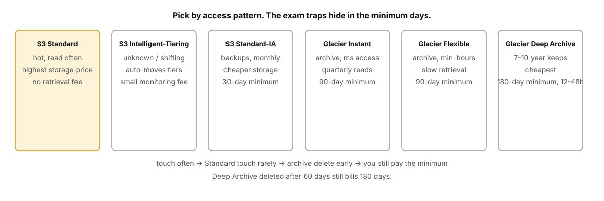
S3 storage classes ordered by access frequency: Standard, Intelligent-Tiering, Standard-IA with a 30-day minimum, Glacier Instant and Flexible with 90-day minimums, Deep Archive with a 180-day minimum and 12 to 48 hour retrieval
Pick the storage class by how often you touch the data. The exam traps hide in the minimum days: delete early and you still pay for them. Source: original figure for the AWS AIP-C01 Study Guide.
S3 storage classes ordered by access frequency: Standard, Intelligent-Tiering, Standard-IA with a 30-day minimum, Glacier Instant and Flexible with 90-day minimums, Deep Archive with a 180-day minimum and 12 to 48 hour retrieval
Mechanism
Identity is settled. The first thing you store goes in S3.
S3 stores objects. An object is a file plus its metadata. Objects live in buckets. Bucket names are globally unique (one namespace for all of AWS) but each bucket lives in one Region. You can store unlimited objects; each can be up to 5 TB.
S3 promises 99.999999999% (eleven nines) durability: it copies your data across at least three AZs.
Storage classes: pay for how often you touch it
Pick by access pattern, not by feel:
1 S3 Standard : Hot data you read often. Highest storage price, no retrieval fee.
2 S3 Intelligent-Tiering : Access pattern unknown or shifting. AWS moves objects between tiers for you for a small monitoring fee.
3 S3 Standard-IA : Infrequent access (backups, monthly reports). Cheaper storage, you pay per retrieval, 30-day minimum.
4 S3 Glacier Instant Retrieval : Archive you might need in milliseconds, quarterly. 90-day minimum.
6 S3 Glacier Deep Archive : The cheapest. Retrieval takes 12 to 48 hours. 180-day minimum. Built for 7-to-10-year compliance keeps.
The exam traps hide in the minimums. Store a file in Deep Archive and delete it after 60 days, and you still pay for 180. That single fact answers a whole family of "cheapest compliant storage" questions.
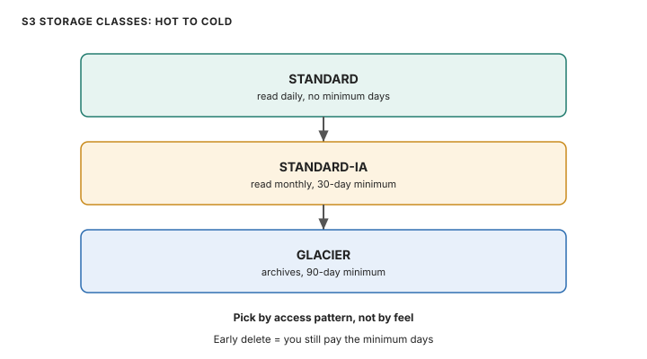
S3 storage class ladder: Standard for daily reads, Standard-IA for monthly reads with a 30-day minimum, Glacier for archives with a 90-day minimum.
Read top to bottom. Standard fits data you read daily. Standard-IA fits monthly reads with a 30-day minimum. Glacier fits archives with a 90-day minimum. Delete before the minimum and you pay for days you did not use.
Versioning, lifecycle, replication
Versioning keeps every version of an object. Overwrite or delete, and the old copy stays. It reverses "someone deleted the training data". MFA Delete can require a hardware code to permanently remove a version.
Lifecycle rules move or delete objects on a schedule without you touching them. Classic exam answer: training logs go Standard for 30 days, then Standard-IA, then Glacier Flexible at 90 days, then expire at 7 years.
import boto3
s3 = boto3.client("s3")
# Lifecycle: hot for 30 days, cool for 60, archive after 90, delete after 7 years.
# Walkthrough: each Transition names a storage class and a day count.
# The Expiration at the end deletes the object (and old versions, via
# NoncurrentVersionExpiration, which this example skips for clarity).
s3.put_bucket_lifecycle_configuration(
Bucket="training-data",
LifecycleConfiguration={
"Rules": [
{
"ID": "training-logs-retention",
"Status": "Enabled",
"Filter": {"Prefix": "logs/"}, # only objects under logs/
"Transitions": [
{"Days": 30, "StorageClass": "STANDARD_IA"},
{"Days": 90, "StorageClass": "GLACIER"},
],
"Expiration": {"Days": 2555}, # ~7 years
}
]
},
)
Replication (CRR across Regions, SRR within one) copies new objects to a second bucket automatically. It needs versioning turned on in both buckets. Exam phrasing: "low-latency access on two continents" or "regulatory copy in a second Region".
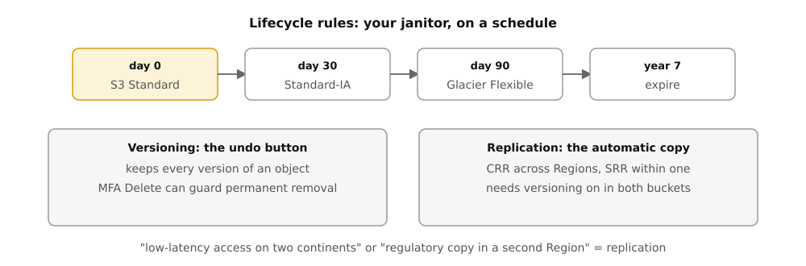
S3 lifecycle timeline: day 0 S3 Standard, day 30 Standard-IA, day 90 Glacier Flexible, year 7 expire; versioning keeps every version as an undo button, replication copies buckets automatically
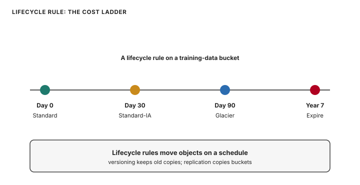
S3 lifecycle timeline: Standard at day 0, Standard-IA at day 30, Glacier at day 90, expire at year 7.
Read left to right. Day 0: Standard. Day 30: Standard-IA. Day 90: Glacier. Year 7: expire. Versioning keeps old copies. Replication copies buckets.
Encryption and sharing
Encryption at rest has three server-side flavors. SSE-S3: AWS manages the keys, AES-256, free. SSE-KMS: your KMS keys, so CloudTrail logs every encrypt and decrypt and you can revoke access by disabling the key. SSE-C: you bring the key with each request. Data in flight is TLS (Transport Layer Security, the encryption behind HTTPS), always.
To share one private file without opening the bucket, hand out a presigned URL. It is a signed link that works until it expires (minutes to 7 days). The bucket stays private. This is the answer to every "share a private object temporarily" question.
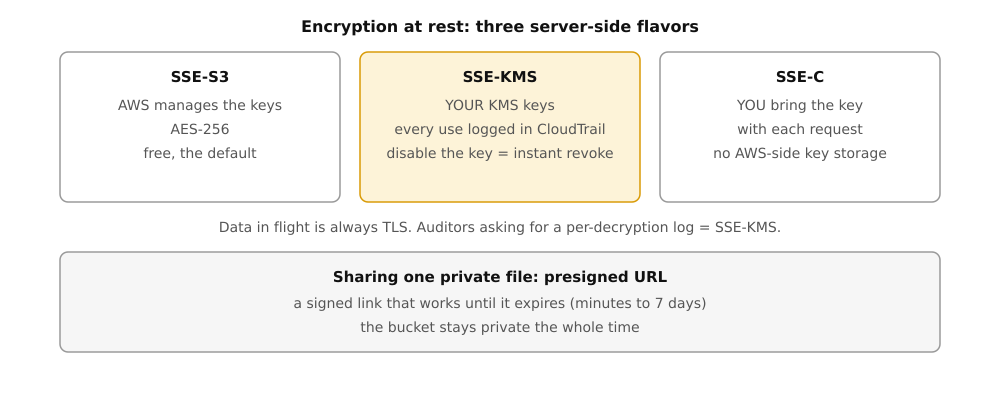
S3 server-side encryption flavors: SSE-S3 with AWS-managed keys, SSE-KMS with customer keys and per-use CloudTrail logging, SSE-C with keys brought per request; presigned URLs share one private file while the bucket stays private
S3 key points. "Users report stale data after overwrite" is outdated: S3 is strongly consistent now. "Bucket must never be public": S3 Block Public Access at the account level. "Ransomware-proof backups": versioning plus Object Lock (WORM, write once read many: nobody, not even root, can delete until the retention date). "Website hosting": S3 static website hosting plus CloudFront, not EC2 for static files.
S3 = buckets of objects, eleven nines, strongly consistent. Match the storage class to touch frequency and respect the minimum days. Versioning keeps old copies. Lifecycle rules move and delete objects on a schedule. Presigned URLs share without exposing.
A GenAI team keeps fine-tuning datasets. Last month's data is read daily; older data is read a few times a year for audits and must be kept 7 years. The bill is too high. What is the cheapest design that still meets the audit rule?
A)Keep everything in S3 Standard and enable versioning.
B)Lifecycle rule: move objects older than 30 days to S3 Glacier Flexible Retrieval, expire after 7 years.
C)Move everything to S3 Glacier Deep Archive immediately and expire after 1 year.
D)Store datasets in EBS snapshots instead of S3.
Correct: B. Recent data stays hot for 30 days, older data drops to cheap archive, and the 7-year expiry matches the audit rule.
A is wrong: Standard for 7 years of rarely read data is the expensive default. C is wrong: Deep Archive retrieval takes up to 48 hours and expiring after 1 year breaks the 7-year rule. D is wrong: EBS snapshots are for block volumes, not a dataset lake, and cost more per GB than S3 archive tiers.
A customer support agent needs to send one private invoice PDF to a customer. The file must be downloadable for 24 hours and never publicly listable. What do you do?
A)Make the bucket public, send the link, then make it private again.
B)Generate a presigned URL for the object with a 24-hour expiry.
C)Create an IAM user for the customer with GetObject on the bucket.
D)Copy the file to a public CloudFront distribution.
Correct: B. A presigned URL grants temporary access to one object; the bucket stays private the whole time.
A is wrong: a public window, however short, is how leaks happen. C is wrong: creating IAM identities for external customers is heavy and the wrong shape. D is wrong: a public distribution exposes the file to everyone, not one customer.
Next: EC2, rented computers.
Numbers and limits
Volatile. Quotas, model IDs, and prices move. The prose below was checked against AWS documentation on 2026-09-28. Re-check any quota or price before exam day.
S3 stores objects. An object is a file plus its metadata. Objects live in buckets . Bucket names are globally unique (one namespace for all of AWS) but each bucket lives in one Region.
S3 promises 99.999999999% (eleven nines) durability: it copies your data across at least three AZs.
Encryption at rest has three server-side flavors. SSE-S3 : AWS manages the keys, AES-256, free.
Worked scenario
Each question in this section is the worked scenario. Read the last sentence of the stem first. That sentence is the constraint.
Exam trap
S3 key points. "Users report stale data after overwrite" is outdated: S3 is strongly consistent now.
Outer layer Claim
5. EC2: rented computers
Storage handled. Now compute: EC2 rents you machines by the second.
EC2 instance type letters map to strengths: T and M general purpose, C compute-heavy, R and X memory-heavy, I and D storage-heavy, P and G GPU, Inf and Trn AWS chips
The first letter of an instance type names its strength. T and M are balanced. C computes. R and X remember. I and D store. P and G accelerate with GPUs. Source: original figure for the AWS AIP-C01 Study Guide.
EC2 instance type letters map to strengths: T and M general purpose, C compute-heavy, R and X memory-heavy, I and D storage-heavy, P and G GPU, Inf and Trn AWS chips
Mechanism
Storage handled. Now compute: EC2 rents you machines by the second.
EC2 rents you virtual machines by the second. Pick a size, pick an operating system image (AMI, Amazon Machine Image), launch it in a subnet, and it is yours. Stop paying attention to the hardware; AWS owns that. Everything above the hypervisor is yours, including patching the OS.
Instance types: the letter tells you the strength
Types look like m7i.large. The first letter is the family, which tells you what the machine is good at:
T, M: general purpose, balanced (web servers, small apps)
C: compute heavy (batch jobs, game servers)
R, X: memory heavy (databases, caches)
I, D: storage heavy, fast local disks (data warehouses)
P, G: GPU (training, graphics); Inf, Trn: AWS chips for inference and training
You do not need to memorize every type. The exam gives you the workload ("memory-intensive database") and expects the family ("R").
Pricing: five ways to pay
1 On-Demand : No commitment, pay per second. Highest price, total flexibility. Default for spiky or unknown workloads.
2 Spot : Bid on spare capacity, up to 90% off. AWS can reclaim the instance with a 2-minute warning. Only for work that survives interruption: batch jobs, CI (continuous integration) runners, fault-tolerant training.
3 Reserved Instances : Commit 1 or 3 years to a type and Region, save up to 72%. For steady-state servers you know will run.
4 Savings Plans : Commit to a dollar-per-hour spend for 1 or 3 years, save up to 72%, with flexibility to change instance types.
5 Dedicated Hosts : A whole physical server, for license or compliance rules that demand it. Most expensive.
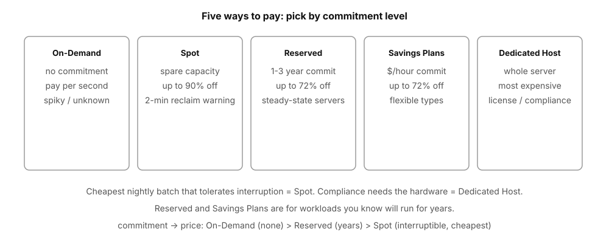
EC2 pricing by commitment: On-Demand with no commitment, Spot with spare capacity up to 90 percent off and a 2-minute reclaim warning, Reserved and Savings Plans with 1 to 3 year commitments up to 72 percent off, Dedicated Host with a whole server for compliance
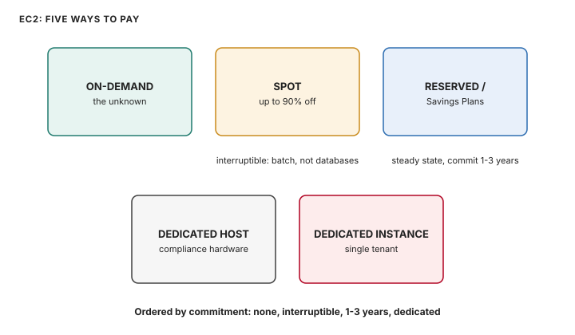
Five ways to pay for EC2: On-Demand, Spot at up to 90 percent off but interruptible, Reserved and Savings Plans for steady state, Dedicated Host and Instance for single-tenant hardware.
Read the top row first. On-Demand fits the unknown. Spot fits interruptible batch at up to 90 percent off. Reserved and Savings Plans fit steady state with a 1-3 year commit. Dedicated Host and Instance fit compliance that wants the hardware.
Storage: three very different disks
EBS Instance store EFS
network disk physical disk on shared file system
attached to ONE the host machine across AZs and
EC2 instance instances (NFS)
survives stop dies with stop/ survives everything
snapshots to S3 terminate scales automatically
gp3 SSD default fastest, free many writers at once
EBS is the normal boot disk: network-attached, persists independently of the instance, snapshot it to S3 for backups. Instance store is the raw disk inside the physical host: very fast and free, but everything on it dies when the instance stops. EFS is a shared NFS (Network File System) file system many instances mount at once, even across AZs.
EC2 key points. "Shared file system for 20 web servers": EFS, not EBS (EBS attaches to one instance). "Cheapest way to run nightly batch that tolerates interruption": Spot. "Database needs its disk to survive a stop": EBS with delete-on-termination off. "Bootstrap script on first launch": user data (runs once as root at launch). "Distribute load across instances": Auto Scaling group plus a load balancer, which the exam pairs with multi-AZ.
EC2 = VMs you fully own above the hypervisor. Letter = family. Pay model = commitment level. EBS persists, instance store evaporates, EFS is shared.
A video-processing fleet of 50 EC2 instances needs one shared input folder. Any instance may read or write, across two AZs. Which storage fits?
A)One EBS volume attached to all 50 instances.
B)Instance store on each instance with rsync between them.
C)Amazon EFS mounted by all instances.
D)A 5 TB S3 bucket mounted as a local disk on each instance.
Correct: C. EFS is a shared NFS file system built for many writers across AZs.
A is wrong: an EBS volume attaches to one instance at a time (multi-attach is a niche case, not this). B is wrong: instance store dies on stop and syncing 50 disks is operational pain. D is wrong: S3 is object storage, not a POSIX file system; mounting hacks are not the exam answer.
A company runs a reporting job every night at 2 AM. It takes 3 hours, you can split it across machines, and you can retry it if a machine disappears. The CFO wants the lowest possible compute price. Which pricing model?
A)On-Demand instances.
B)Spot instances.
C)Reserved Instances for 3 years.
D)Dedicated Hosts.
Correct: B. The job tolerates interruption, which is exactly what Spot's 2-minute reclaim warning is built for, at up to 90% off.
A is wrong: On-Demand is the flexible but expensive default. C is wrong: a 3-year commitment for a 3-hour nightly job wastes money most of the day. D is wrong: dedicated hardware is for compliance, not cost.
Next: VPC, your private network.
Numbers and limits
Volatile. Quotas, model IDs, and prices move. The prose below was checked against AWS documentation on 2026-09-28. Re-check any quota or price before exam day.
Storage handled. Now compute: EC2 rents you machines by the second.
EC2 rents you virtual machines by the second. Pick a size, pick an operating system image (AMI, Amazon Machine Image), launch it in a subnet, and it is yours.
Read the top row first. On-Demand fits the unknown. Spot fits interruptible batch at up to 90 percent off.
Worked scenario
Each question in this section is the worked scenario. Read the last sentence of the stem first. That sentence is the constraint.
Exam trap
You do not need to memorize every type. The exam gives you the workload ("memory-intensive database") and expects the family ("R").
Outer layer Claim
6. VPC: your private network
Machines need a network to live in. That is the VPC.
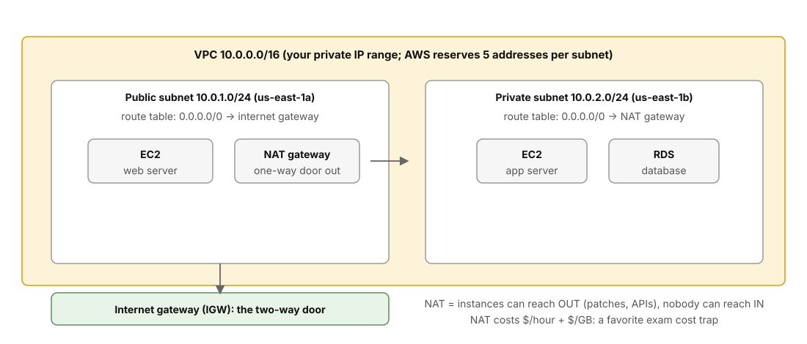
VPC layout: a VPC with a public subnet in one AZ routing 0.0.0.0/0 to the internet gateway, a private subnet in another AZ routing 0.0.0.0/0 to a NAT gateway, and a database in the private subnet
A VPC holds subnets in different AZs. The public subnet routes 0.0.0.0/0 to the internet gateway (two-way). The private subnet routes it to the NAT gateway (one-way out). Databases sit in private subnets with no route at all. Source: original figure for the AWS AIP-C01 Study Guide.
VPC layout: a VPC with a public subnet in one AZ routing 0.0.0.0/0 to the internet gateway, a private subnet in another AZ routing 0.0.0.0/0 to a NAT gateway, and a database in the private subnet
Mechanism
Machines need a network to live in. That is the VPC.
A VPC is your own isolated network inside AWS. You draw the map: the IP range, the subnets, the roads between them, and the gates to the outside. Nothing gets in or out unless you build the road.
Start with the picture from the AWS docs: one VPC, one subnet per AZ, EC2 instances inside, an internet gateway on the edge.
The pieces, one by one
You create a VPC with a CIDR block (CIDR is Classless Inter-Domain Routing), your private IP range, like 10.0.0.0/16 (65,536 addresses). Inside it you carve subnets, each pinned to exactly one AZ, like 10.0.1.0/24 in us-east-1a. AWS reserves 5 addresses per subnet, so a /24 gives you 251 usable.
A route table is the road map: rows that say "traffic for this destination goes to that target". A subnet is public when its route table sends 0.0.0.0/0 (everything) to an internet gateway (IGW). No IGW route means private.
The NAT gateway sits in a public subnet and gives private subnets a one-way door. Instances inside can reach out (download patches, call APIs). Nobody outside can reach in.
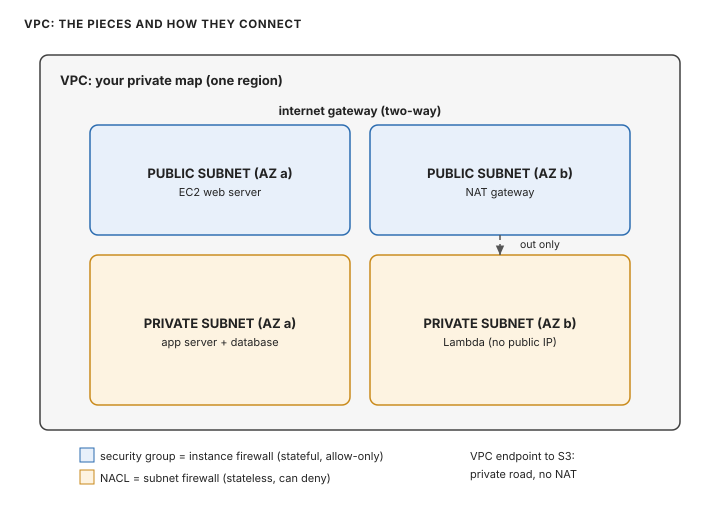
A VPC with public subnets holding web servers and a NAT gateway, private subnets holding app servers and Lambda, an internet gateway, and a VPC endpoint to S3.
Read top to bottom. The internet gateway is two-way. Public subnets hold web servers and the NAT gateway. Private subnets hold app servers and Lambda with no public IP. The NAT gives a one-way door out. The VPC endpoint reaches S3 without the internet.
Security groups vs NACLs: the exam's favorite pair
Security group Network ACL
at the INSTANCE (ENI, the virtual network card) at the SUBNET
stateful: reply traffic stateless: you must allow
auto-allowed both directions yourself
ALLOW rules only ALLOW and DENY rules
all rules evaluated (union) numbered rules, lowest first
A security group is a firewall around each instance. It is stateful: allow port 80 in, and the reply goes out automatically. Rules are allow-only and they add up. A NACL is a firewall around the whole subnet. It is stateless: allow port 80 in and you must also allow the ephemeral reply ports (1024-65535) out, or responses die. NACLs evaluate numbered rules in order and can explicitly deny, which makes them the tool for "block this one bad IP".
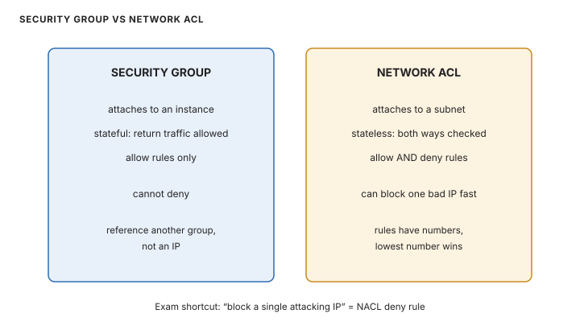
Security group versus network ACL: security groups attach to instances, are stateful and allow-only; NACLs attach to subnets, are stateless, and can deny.
Read the two columns. A security group attaches to an instance, is stateful, and holds allow rules only. A NACL attaches to a subnet, is stateless, and can deny. "Block a single attacking IP" is a NACL deny rule.
VPC endpoints let private subnets reach AWS services without touching the internet at all. Gateway endpoints (S3, DynamoDB) are free and live in the route table. Interface endpoints (most other services, powered by PrivateLink) put a private IP inside your subnet.
Watch the short explainer below. It covers this whole section in under five minutes: private ranges, public vs private subnets, IGW vs NAT, and stateful vs stateless.
VPC in Plain English Click to load this video from YouTube
"Private EC2 needs OS patches but must not be reachable from the internet." Answer: NAT gateway in a public subnet. The private route table points 0.0.0.0/0 at the NAT.
VPC = your map. Subnets live in one AZ each. IGW is two-way, NAT is one-way-out. Security groups attach to instances (stateful, allow-only). NACLs attach to subnets (stateless, can deny). Endpoints keep AWS traffic off the internet.
A Lambda function in private subnets must call an external payment API over the internet. It currently times out. The subnets have no route to an internet gateway, by design. What fixes it with the least exposure?
A)Add a route from the private subnets to an internet gateway.
B)Put a NAT gateway in a public subnet and route 0.0.0.0/0 from the private subnets to it.
C)Move the Lambda function to public subnets with public IPs.
D)Open all outbound ports in the security group.
Correct: B. The NAT gateway gives outbound-only internet: the function can call out, nobody can call in.
A is wrong: that makes the subnets public and everything in them internet-reachable. C is wrong: public subnets with public IPs expose the function unnecessarily. D is wrong: security groups already allow all outbound by default; the missing piece is the route, not the firewall.
An attacker at 203.0.113.44 is hammering your web servers. You need to block that IP at the subnet edge within minutes, without touching any instance. Which control?
A)A security group rule denying 203.0.113.44.
B)A NACL rule denying 203.0.113.44 with a low rule number.
C)A route table entry blackholing 203.0.113.44.
D)A VPC endpoint policy for 203.0.113.44.
Correct: B. NACLs sit at the subnet level and support explicit deny rules evaluated in number order.
A is wrong: security groups have no deny rules, only allow. C is wrong: route tables route traffic, they do not filter by source IP. D is wrong: endpoint policies control access to AWS services, not inbound traffic.
Next: databases, picked by shape of data.
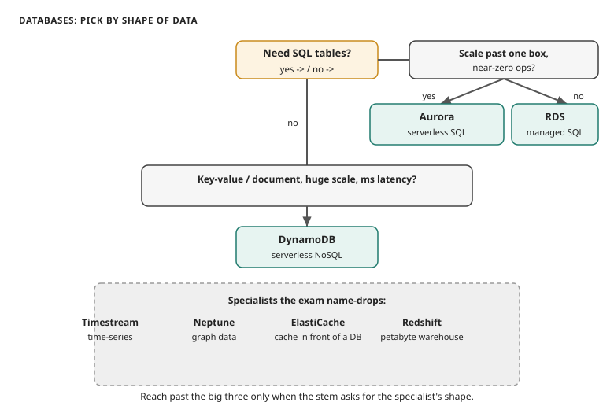
Database picker: SQL tables to RDS or Aurora, key-value document at scale to DynamoDB.
Answer the first question: do you need SQL tables? If yes, the scale question picks Aurora or RDS; if no, DynamoDB fits key-value and document data at any scale.
One-liners for the rest: ElastiCache (Redis/Memcached) sits in front of a database to absorb reads. Redshift is the data warehouse for analytics over petabytes. Neptune is for graph data (relationships first). The exam mentions them to test whether you reach past the big three.
"Relational, needs cross-Region reads": RDS read replica or Aurora Global Database. "Session store for a million users, sub-10ms": DynamoDB or ElastiCache, not RDS. "Zero database administration": Aurora Serverless or DynamoDB on-demand. "Lift-and-shift Oracle with minimal changes": RDS for Oracle.
SQL + control = RDS. SQL + scale = Aurora. Key-value + serverless = DynamoDB. Cache in front when reads hurt.
A mobile game's leaderboard needs 5 ms reads and writes at 100,000 requests per second, with data in three Regions. The team has no database admins. Which service?
A)RDS for MySQL with Multi-AZ.
B)Aurora Global Database.
C)DynamoDB with Global Tables, on-demand capacity.
D)Redshift cluster.
Correct: C. DynamoDB is serverless key-value at single-digit ms, and Global Tables replicate active-active across Regions with no servers to run.
A is wrong: one relational box cannot do 100k rps at 5 ms. B is wrong: Aurora is relational and heavier than this workload needs. D is wrong: Redshift is an analytics warehouse, not a live leaderboard.
Next: Lambda, code with no servers.
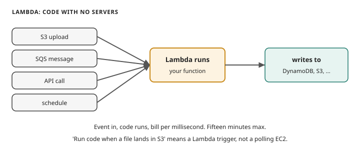
Lambda flow: event sources trigger the function, which runs and writes results.
Anything on the left can wake the function: S3, SQS, API Gateway, a schedule. The function runs, writes to DynamoDB or S3, and disappears. Triggers are the whole game.
Triggers are the vocabulary: S3 events, SQS queues, DynamoDB Streams, API Gateway requests, EventBridge schedules and events. Concurrency is how many copies run at once. Reserve some for critical functions so a busy neighbor cannot starve them. Provisioned concurrency keeps copies warm to remove cold starts for latency-sensitive APIs.
import json
import boto3
s3 = boto3.client("s3")
def handler(event, context):
# Triggered by an S3 ObjectCreated event. event["Records"] holds
# one entry per uploaded file; we handle the first.
record = event["Records"][0]
bucket = record["s3"]["bucket"]["name"]
key = record["s3"]["object"]["key"]
# Copy the upload into a "processed/" prefix as a placeholder
# for real work (thumbnail, embedding, validation...).
s3.copy_object(
Bucket=bucket,
Key="processed/" + key,
CopySource={"Bucket": bucket, "Key": key},
)
return {"statusCode": 200, "body": json.dumps({"copied": key})}
Walkthrough: Lambda hands your function an event dict describing what happened. For S3, that means bucket and key. context carries runtime info (time left, request id). The function does its work with boto3 and returns. Keep it short: anything over 15 minutes does not belong here.
"Run code when a file lands in S3": Lambda trigger, not a polling EC2. "Job takes 45 minutes": not Lambda; use Fargate (serverless containers), EC2, or Batch (AWS Batch, for scheduled heavy jobs). "API with spiky traffic and zero idle cost": API Gateway plus Lambda. "Cold starts hurting p99 (the 99th-percentile latency: the slowest 1% of requests)": provisioned concurrency. "Function needs a VPC resource": attach it to private subnets (then it needs a NAT or endpoint for the internet).
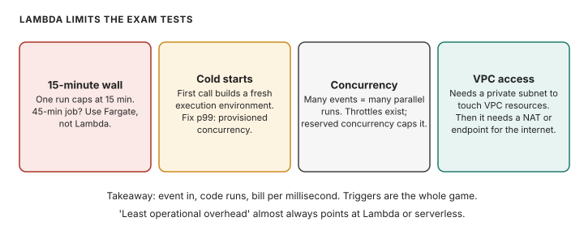
Lambda limits: 15 minute max, memory and disk sizes, provisioned concurrency, VPC attachment.
The 15-minute line is the exam's favorite tripwire: a 45-minute job is not Lambda, it is Fargate or Batch. Provisioned concurrency keeps copies warm when cold starts hurt p99.
Lambda = event in, code runs, bill per millisecond. Fifteen minutes max. Triggers are the whole game.
Every night a 2 GB CSV lands in S3. A job must validate it and load rows into DynamoDB within 10 minutes. Cheapest correct design?
A)An EC2 instance running 24/7 polling the bucket.
B)A Lambda function triggered by the S3 upload event.
C)A Lambda function on an EventBridge schedule every minute polling S3.
D)An RDS stored procedure reading from S3.
Correct: B. The upload event triggers exactly one run; you pay for seconds of compute, nothing idle.
A is wrong: a full-time server for a nightly 10-minute job. C is wrong: polling every minute burns invocations for no reason when the trigger exists. D is wrong: RDS cannot reach into S3 like that, and it is the wrong tool.
Volatile. Quotas, model IDs, and prices move. The prose below was checked against AWS documentation on 2026-09-28. Re-check any quota or price before exam day.
Triggers are the vocabulary: S3 events, SQS queues, DynamoDB Streams, API Gateway requests, EventBridge schedules and events.
Walkthrough: Lambda hands your function an event dict describing what happened. For S3, that means bucket and key.
"Run code when a file lands in S3": Lambda trigger, not a polling EC2. "Job takes 45 minutes": not Lambda; use Fargate (serverless containers), EC2, or Batch (AWS Batch, for scheduled heavy jobs).
Worked scenario
Each question in this section is the worked scenario. Read the last sentence of the stem first. That sentence is the constraint.
Exam trap
Exam trap: a real service used for the wrong job, or a heavier ladder rung than the stem requires. Match the verb in the stem — cite, act, block, cheapen, or measure — to one mechanism here.
Outer layer Claim
9. Observability: CloudWatch, CloudTrail, Config
Things are running. Now you need to see them: metrics, logs, and the audit trail.
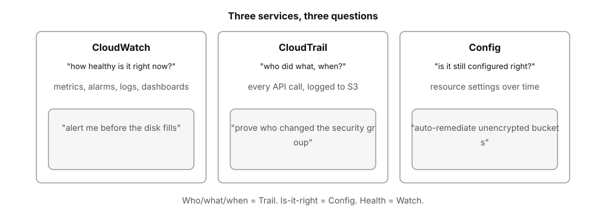
Observability trio: CloudWatch answers how healthy it is right now with metrics, alarms, and logs; CloudTrail answers who did what and when; Config answers whether resources are still configured right
CloudWatch answers how healthy it is right now. CloudTrail answers who did what and when. Config answers whether it is still configured right. Source: original figure for the AWS AIP-C01 Study Guide.
Observability trio: CloudWatch answers how healthy it is right now with metrics, alarms, and logs; CloudTrail answers who did what and when; Config answers whether resources are still configured right
Mechanism
Things are running. Now you need to see them: metrics, logs, and the audit trail.
Three services, three questions. CloudWatch asks "how healthy is it right now?" Metrics, alarms, logs, dashboards. CloudTrail asks "who did what, when?" Every API call in the account, logged to S3. Config asks "is it still configured correctly?" Records resource settings over time and flags drift with rules.
CloudWatch: CPU > 80% for 5 min ──> alarm ──> page the on-call
CloudTrail: "who deleted the bucket?" ──> alice, 02:14, from 198.51.100.7
Config: "are all EBS volumes encrypted?" ──> rule: no ──> flag it
The exam confuses them on purpose. "Alert me before the disk fills": CloudWatch alarm on a metric. "Prove to auditors that MFA stayed on all quarter": CloudTrail history plus Config timeline. "Auto-remediate unencrypted buckets": Config rule triggering a Lambda.
After an incident, the team must answer: which IAM principal modified the production security group yesterday at 3 PM? Which service answers this directly?
A)CloudWatch Logs Insights.
B)AWS CloudTrail.
C)AWS Config.
D)VPC Flow Logs.
Correct: B. CloudTrail records every API call with the caller identity and timestamp; AuthorizeSecurityGroupIngress is an API call.
A is wrong: CloudWatch holds metrics and app logs, not the API audit trail. C is wrong: Config would show the group changed, not who changed it. D is wrong: flow logs show network packets, not API calls.
Next: messaging: SQS, SNS, EventBridge.
Numbers and limits
Volatile. Quotas, model IDs, and prices move. The prose below was checked against AWS documentation on 2026-09-28. Re-check any quota or price before exam day.
This section states no service quota. Do not memorize a number the text does not give you.
Worked scenario
Each question in this section is the worked scenario. Read the last sentence of the stem first. That sentence is the constraint.
Exam trap
Exam trap: a real service used for the wrong job, or a heavier ladder rung than the stem requires. Match the verb in the stem — cite, act, block, cheapen, or measure — to one mechanism here.
Outer layer Claim
10. Messaging: SQS, SNS, EventBridge
Services that call each other directly wait on each other. Messaging breaks that coupling.
Messaging patterns: SQS queue with senders, queue, and workers, plus a dead-letter queue; SNS topic fanning out to email, SMS, Lambda, and SQS; EventBridge matching events to targets with cron schedules
SQS is the queue: producers drop in, workers pull out, failures go to the dead-letter queue. SNS is the broadcast: one publish, everyone subscribed gets it. EventBridge matches events to rules and adds cron. Source: original figure for the AWS AIP-C01 Study Guide.
Messaging patterns: SQS queue with senders, queue, and workers, plus a dead-letter queue; SNS topic fanning out to email, SMS, Lambda, and SQS; EventBridge matching events to targets with cron schedules
Mechanism
Services that call each other directly wait on each other. Messaging breaks that coupling.
Services talk through messages so none of them waits on another. Three services, three shapes.
SQS is a queue: senders drop messages in, receivers pull them out. It decouples and buffers. Two flavors: Standard (huge scale, at-least-once delivery, order best-effort) and FIFO (exactly-once, strict order, lower throughput, name ends in .fifo). If processing fails, the message returns after the visibility timeout. After enough failures it moves to a dead-letter queue (DLQ) for inspection.
SNS is pub/sub: publish once to a topic, and every subscriber gets a push (email, SMS, Lambda, SQS, HTTP). It is fan-out: one event, many consumers.
EventBridge is the event bus: rules match events (AWS service events, your app's events, SaaS partners, cron schedules) and route them to targets. It is the answer to "when X happens, do Y" and to scheduled tasks.
one event, many consumers ──> SNS topic ──> Lambda + SQS + email
work buffer between services ──> SQS queue ──> workers pull at their pace
"every night at 2am" or "on EC2 state change" ──> EventBridge rule
import boto3
sqs = boto3.client("sqs")
# Send one message. The queue URL comes from create_queue or the console.
# Walkthrough: MessageBody is the payload (keep under 256 KB).
# DelaySeconds postpones visibility; MessageGroupId would make this FIFO.
resp = sqs.send_message(
QueueUrl="https://sqs.us-east-1.amazonaws.com/123456789012/orders",
MessageBody='{"order_id": 42, "total": 19.99}',
)
print(resp["MessageId"]) # unique id; use it to trace the message
"Two services must not call each other directly": SQS between them. "Notify five systems when an order ships": SNS fan-out, often SNS to SQS queues per consumer. "Run a Lambda every hour and also when a file lands": EventBridge schedule plus S3 trigger. "Messages must not be lost and order matters": SQS FIFO plus DLQ.
SQS = queue, pull, buffer. SNS = broadcast, push, fan-out. EventBridge = rules over events, plus cron. DLQ catches the poison messages.
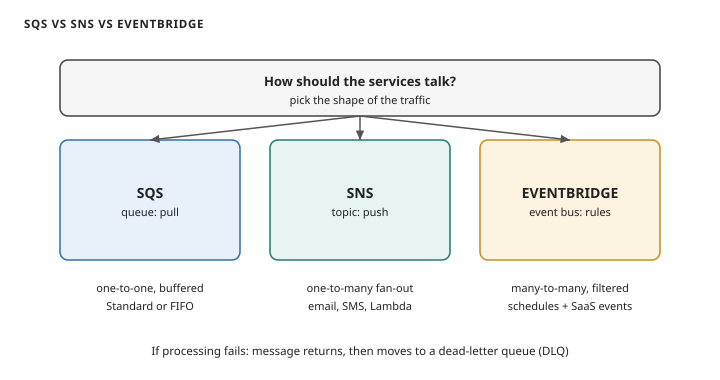
Messaging decision: SQS queue for one-to-one pull, SNS topic for one-to-many push, EventBridge bus for filtered events.
Start at the question. One-to-one with buffering is SQS. One-to-many fan-out is SNS. Many-to-many with rules and schedules is EventBridge. Failed messages return to the queue, then move to the dead-letter queue.
An order service must notify the warehouse system, the email service, and the analytics pipeline when a customer places an order. Each consumer scales independently and one slow consumer must not block the others. Which design?
A)The order service calls each consumer's HTTP endpoint in sequence.
B)The order service publishes to one SNS topic; each consumer subscribes (via SQS or Lambda).
C)The order service writes to one SQS standard queue read by all three.
D)The order service writes directly to each consumer's database.
Correct: B. SNS fan-out decouples the publisher from every consumer; each scales and fails on its own.
A is wrong: sequential calls couple availability and latency of all four systems. C is wrong: one queue means one consumer eats each message; the other two never see it. D is wrong: cross-service database writes are the tightest coupling there is.
Next: API Gateway, the managed front door.
Numbers and limits
Volatile. Quotas, model IDs, and prices move. The prose below was checked against AWS documentation on 2026-09-28. Re-check any quota or price before exam day.
"Two services must not call each other directly": SQS between them. "Notify five systems when an order ships": SNS fan-out, often SNS to SQS queues per consumer.
Worked scenario
Each question in this section is the worked scenario. Read the last sentence of the stem first. That sentence is the constraint.
Exam trap
Exam trap: a real service used for the wrong job, or a heavier ladder rung than the stem requires. Match the verb in the stem — cite, act, block, cheapen, or measure — to one mechanism here.
Outer layer Claim
11. API Gateway: the managed front door
Internal traffic is decoupled. External clients need one managed entry point.
API Gateway flavors: clients hit one HTTPS endpoint, API Gateway handles throttling, auth, and validation, with HTTP API for cheap and fast, REST API for usage plans, API keys, WAF, and caching, and WebSocket API for two-way traffic
One HTTPS entry point for your backends. HTTP API is cheap and fast. REST API adds usage plans, API keys, WAF, and caching. WebSocket API stays open for two-way traffic. Source: original figure for the AWS AIP-C01 Study Guide.
API Gateway flavors: clients hit one HTTPS endpoint, API Gateway handles throttling, auth, and validation, with HTTP API for cheap and fast, REST API for usage plans, API keys, WAF, and caching, and WebSocket API for two-way traffic
Mechanism
Internal traffic is decoupled. External clients need one managed entry point.
API Gateway puts a managed entry point in front of your backends. Clients hit one HTTPS (encrypted web traffic) endpoint. The gateway handles throttling, authentication, request validation, caching, and routing to Lambda, EC2, or any HTTP service.
Three flavors: HTTP APIs (cheap, fast, for Lambda and HTTP backends), REST APIs (full features: usage plans, API keys, request/response mapping, WAF (Web Application Firewall)), WebSocket APIs (two-way, for chat and live feeds). Deploy in stages (dev, prod), each with its own URL. Protect backends with auth: IAM, Cognito (Amazon's sign-in service for app users) user pools, or a Lambda authorizer.
client ──> API Gateway ──> Lambda (or EC2 / HTTP)
├── throttle: 1000 req/s, burst 2000
├── auth: Cognito token required
└── cache: GET /products for 60s
An order service must notify the warehouse system, the email service, and the analytics pipeline when a customer places an order. Each consumer scales independently and one slow consumer must not block the others. Which design?
API Gateway = managed entry point. HTTP API for cheap and simple, REST API for full control, WebSocket for two-way.
A startup's public API runs on Lambda. They need per-customer rate limits, API keys for billing tiers, and caching of popular GET responses. Which option fits?
A)HTTP API with default settings.
B)REST API with usage plans, API keys, and caching enabled.
C)WebSocket API.
D)An Application Load Balancer in front of Lambda.
Correct: B. Usage plans plus API keys give per-customer throttling and quotas; REST APIs support response caching.
A is wrong: HTTP APIs lack usage plans and API keys. C is wrong: WebSocket is for two-way messaging, not REST billing tiers. D is wrong: an ALB does not do API keys, usage plans, or response caching.
Next: KMS, encryption key management.
Numbers and limits
Volatile. Quotas, model IDs, and prices move. The prose below was checked against AWS documentation on 2026-09-28. Re-check any quota or price before exam day.
API Gateway puts a managed entry point in front of your backends. Clients hit one HTTPS (encrypted web traffic) endpoint.
Worked scenario
Each question in this section is the worked scenario. Read the last sentence of the stem first. That sentence is the constraint.
Exam trap
Exam trap: a real service used for the wrong job, or a heavier ladder rung than the stem requires. Match the verb in the stem — cite, act, block, cheapen, or measure — to one mechanism here.
Outer layer Claim
12. KMS: encryption key management
Traffic flows. Now lock it down: KMS keeps the encryption keys.
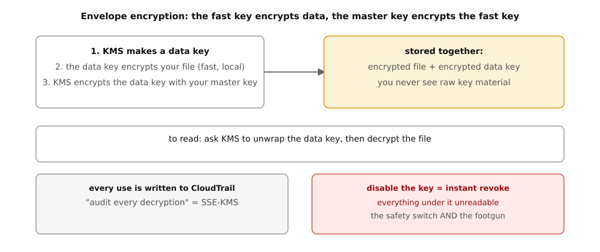
KMS envelope encryption: KMS creates a data key, the data key encrypts the file locally, the master key encrypts the data key; every unwrap is logged in CloudTrail and disabling the key instantly revokes everything under it
Envelope encryption: KMS makes a data key, the data key encrypts your file locally (fast), and the master key encrypts the data key. CloudTrail logs every unwrap. Disable the key and everything under it becomes unreadable. Source: original figure for the AWS AIP-C01 Study Guide.
KMS envelope encryption: KMS creates a data key, the data key encrypts the file locally, the master key encrypts the data key; every unwrap is logged in CloudTrail and disabling the key instantly revokes everything under it
Mechanism
Traffic flows. Now lock it down: KMS keeps the encryption keys.
KMS creates and guards encryption keys. You never see the raw key material; you ask KMS to encrypt and decrypt for you, and KMS writes every use to CloudTrail.
The trick is envelope encryption. KMS makes a data key. The data key encrypts your file (fast, local). Then KMS encrypts the data key itself with your master key.
your file ──encrypt with data key──> ciphertext
data key ──encrypt with KMS key──> stored alongside the file
read: KMS unwraps data key (logged) ──> data key decrypts file
Key types: AWS-managed (free, one per service), customer-managed (your policies, your rotation, your disable switch), CloudHSM (dedicated hardware, for compliance that demands it). A key policy (resource-based) says which IAM principals may use the key. Disable the key and everything encrypted under it becomes unreadable instantly. That is both the safety switch and the risk.
"Audit every decryption of patient records": SSE-KMS, because each use lands in CloudTrail; SSE-S3 has no per-use log. "Instantly revoke access to archived data": disable the KMS key. "Encrypt an EBS volume": one checkbox, AWS-managed key by default. "Who can use this key": the key policy, not just IAM policies.
KMS holds the keys, you hold the policies. Envelope encryption keeps it fast. KMS logs every use. Disabling a key revokes everything under it.
A healthcare app stores patient scans in S3. Auditors require a log entry for every single decryption, and the ability to revoke all access within minutes during an incident. Which encryption choice?
A)SSE-S3 with default settings.
B)SSE-KMS with a customer-managed key.
C)SSE-C with keys emailed to admins.
D)Client-side encryption with hardcoded keys.
Correct: B. KMS logs every decrypt to CloudTrail, and disabling the customer-managed key revokes access to everything encrypted under it.
A is wrong: SSE-S3 has no per-decryption audit log. C is wrong: emailing keys is never the answer, and SSE-C has no central revoke. D is wrong: hardcoded keys are un-auditable and un-revocable.
Next: CloudFormation, infrastructure as code.
Numbers and limits
Volatile. Quotas, model IDs, and prices move. The prose below was checked against AWS documentation on 2026-09-28. Re-check any quota or price before exam day.
This section states no service quota. Do not memorize a number the text does not give you.
Worked scenario
Each question in this section is the worked scenario. Read the last sentence of the stem first. That sentence is the constraint.
Exam trap
KMS creates and guards encryption keys. You never see the raw key material; you ask KMS to encrypt and decrypt for you, and KMS writes every use to CloudTrail.
Outer layer Claim
13. CloudFormation: infrastructure as code
Every service so far is clickable. CloudFormation makes it all repeatable text.
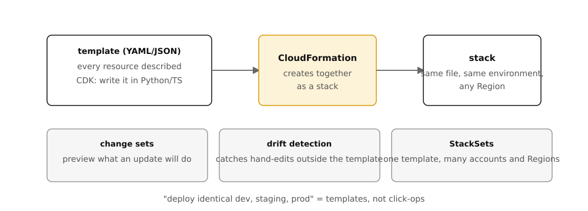
CloudFormation flow: a YAML template goes in, CloudFormation creates every resource as one stack, identical in any Region; change sets preview updates, drift detection catches hand edits, StackSets repeat across accounts
Template in, stack out: CloudFormation creates every resource in the file as one stack, identical in any Region. Change sets preview updates. Drift detection catches hand edits. Source: original figure for the AWS AIP-C01 Study Guide.
CloudFormation flow: a YAML template goes in, CloudFormation creates every resource as one stack, identical in any Region; change sets preview updates, drift detection catches hand edits, StackSets repeat across accounts
Mechanism
Every service so far is clickable. CloudFormation makes it all repeatable text.
CloudFormation turns your architecture into a text file. You write a template (YAML or JSON) describing every resource; CloudFormation creates them together as a stack. Re-run the same template and you get the same environment, in any Region.
# You do not write CloudFormation in boto3 day to day; you write the
# template. This is the smallest honest example: one S3 bucket.
#
# AWSTemplateFormatVersion: "2010-09-09"
# Description: Minimal stack - one versioned bucket
# Resources:
# TrainingBucket:
# Type: AWS::S3::Bucket
# Properties:
# BucketName: training-data-2026
# VersioningConfiguration:
# Status: Enabled
#
# Walkthrough: Resources is the inventory. Each entry names a type
# (AWS::S3::Bucket) and its properties. CloudFormation figures out
# the order, creates everything, and rolls back if anything fails.
Change sets preview what an update will do before it runs. Drift detection tells you when someone hand-edited a resource outside the template. StackSets deploy one template across many accounts and Regions. The CDK (Cloud Development Kit) lets you write the same idea in Python or TypeScript instead of YAML; Terraform is the popular third-party alternative.
"Deploy identical environments for dev, staging, prod": CloudFormation or CDK, not click-ops. "See what an update will change first": change sets. "One template, fifty accounts": StackSets. "Someone changed a security group by hand": drift detection.
Template in, stack out. Same file, same environment, every time. Preview with change sets, catch hand edits with drift detection.
A team deploys its GenAI stack by clicking through the console. Prod and staging have drifted apart and nobody knows the differences. What fixes this permanently?
A)Take screenshots of every console page for documentation.
B)Define the stack in CloudFormation templates, deploy per environment, and run drift detection.
C)Give only one person console access.
D)Copy the production resources with S3 replication.
Correct: B. Templates make environments reproducible; drift detection catches hand edits.
A is wrong: screenshots document nothing enforceable. C is wrong: fewer clickers does not make clicks reproducible. D is wrong: S3 replication copies objects, not infrastructure.
Next: billing: how AWS charges you.
Numbers and limits
Volatile. Quotas, model IDs, and prices move. The prose below was checked against AWS documentation on 2026-09-28. Re-check any quota or price before exam day.
This section states no service quota. Do not memorize a number the text does not give you.
Worked scenario
Each question in this section is the worked scenario. Read the last sentence of the stem first. That sentence is the constraint.
Exam trap
Exam trap: a real service used for the wrong job, or a heavier ladder rung than the stem requires. Match the verb in the stem — cite, act, block, cheapen, or measure — to one mechanism here.
Outer layer Claim
14. Billing: how AWS charges you
Everything above costs money. Here is how AWS charges you.
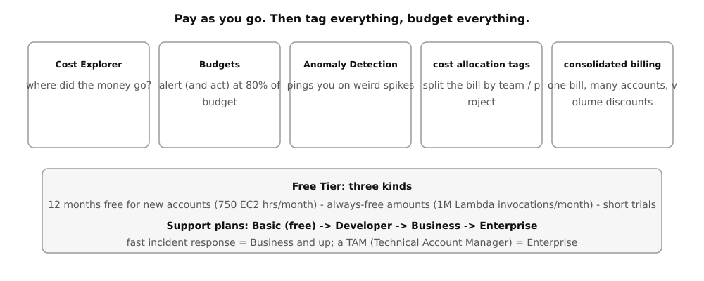
Billing tools: Cost Explorer shows where the money went, Budgets alert and act at 80 percent, Anomaly Detection pings on weird spikes, cost allocation tags split the bill by team, consolidated billing merges many accounts for volume discounts
Cost Explorer shows where the money went. Budgets alert and act at 80 percent. Anomaly Detection pings on weird spikes. Tags split the bill by team. Organizations merge the bills and stack the volume discounts. Source: original figure for the AWS AIP-C01 Study Guide.
Billing tools: Cost Explorer shows where the money went, Budgets alert and act at 80 percent, Anomaly Detection pings on weird spikes, cost allocation tags split the bill by team, consolidated billing merges many accounts for volume discounts
Mechanism
Everything above costs money. Here is how AWS charges you.
AWS bills pay-as-you-go: per second of EC2, per GB-month of S3, per million Lambda invocations. No upfront cost unless you choose a commitment for a discount.
Worked example: billing units in plain math
Three units from this chapter, with the page's own numbers. Free Tier: 750 EC2 hours a month. One always-on instance runs 24 x 30 = 720 hours a month, so 750 - 720 = 30 hours of headroom: one instance, free, all month. Always-free Lambda: 1,000,000 invocations a month = 1,000,000 / 30 = about 33,333 a day, forever.
billed GB-months = GB stored x fraction of the month
500 GB stored for half the month = 500 x 0.5 = 250 GB-months billed. The unit is GB-months, not GB: storing less data or storing it for less time both cut the bill.
The tools: Cost Explorer shows where money went. Budgets alert (and can act) when spend crosses a line you set. Cost Anomaly Detection pings you on weird spikes. Cost allocation tags split the bill by team or project. Consolidated billing (via Organizations) merges many accounts into one bill with volume discounts.
Support plans step up from Basic (free) to Developer, Business, and Enterprise. The exam sometimes asks which plan gives a 15-minute response or a TAM. Business and up give fast response. Enterprise adds the TAM, a Technical Account Manager.
"Finance needs each department billed separately": cost allocation tags plus consolidated billing. "Alert at 80% of the monthly budget": AWS Budgets. "Cheapest support with fast incident response": Business. "Estimate a new architecture's cost": the AWS Pricing Calculator.
Pay as you go, tag everything, budget everything. Free Tier is real but limited. Consolidated billing merges accounts and discounts.
A company has 12 AWS accounts, one per team. Finance wants one bill, volume discounts, and per-team cost breakdowns. Which combination?
A)One IAM user per team with billing alerts.
B)AWS Organizations with consolidated billing and cost allocation tags per team.
C)Twelve separate credit cards and a spreadsheet.
D)A single shared account for all teams.
Correct: B. Organizations merges billing for discounts; tags attribute spend per team.
A is wrong: IAM users do not merge bills across accounts. C is wrong: manual and discount-free. D is wrong: one account destroys isolation and per-team tracking.
Next: putting it all together: a GenAI app on AWS.
Numbers and limits
Volatile. Quotas, model IDs, and prices move. The prose below was checked against AWS documentation on 2026-09-28. Re-check any quota or price before exam day.
AWS bills pay-as-you-go: per second of EC2, per GB-month of S3, per million Lambda invocations.
Support plans step up from Basic (free) to Developer, Business, and Enterprise. The exam sometimes asks which plan gives a 15-minute response or a TAM.
"Finance needs each department billed separately": cost allocation tags plus consolidated billing.
Worked scenario
Each question in this section is the worked scenario. Read the last sentence of the stem first. That sentence is the constraint.
Exam trap
Exam trap: a real service used for the wrong job, or a heavier ladder rung than the stem requires. Match the verb in the stem — cite, act, block, cheapen, or measure — to one mechanism here.
Outer layer Claim
15. Putting it together: a GenAI app on AWS
All the pieces are in. Here they wire into one picture.
Secure RAG chatbot architecture: users reach CloudFront and API Gateway, Lambda in private subnets reads documents from an encrypted versioned S3 bucket and calls Bedrock through a VPC endpoint; CloudTrail, CloudWatch, and Config form the audit layer
The RAG chatbot, assembled. The user reaches CloudFront and API Gateway. Lambda in private subnets reads documents from an encrypted S3 bucket and calls Bedrock through a VPC endpoint. The audit layer logs everything. Source: original figure for the AWS AIP-C01 Study Guide.
Secure RAG chatbot architecture: users reach CloudFront and API Gateway, Lambda in private subnets reads documents from an encrypted versioned S3 bucket and calls Bedrock through a VPC endpoint; CloudTrail, CloudWatch, and Config form the audit layer
Mechanism
All the pieces are in. Here they wire into one picture.
Everything above wires into one picture. Here is a RAG chatbot, the architecture AIP-C01 scenarios are built from:
user
│
▼
CloudFront (edge cache, HTTPS)
│
▼
API Gateway (auth, throttle) ── public subnets
│
▼
Lambda "chat-api" ── private subnets (no public IPs)
│ │
│ ├── IAM role: bedrock:InvokeModel, s3:GetObject (docs bucket)
│ │
│ ├── S3 "docs" ──> embeddings in OpenSearch Serverless
│ │ (versioned, SSE-KMS, lifecycle to Glacier)
│ │
│ └── Bedrock (via VPC endpoint, traffic never hits the internet)
│ └── Guardrails on the way out
│
└── CloudWatch Logs + CloudTrail audit + Config rules
Read it bottom to top, the way the exam does. The user never touches your compute directly: CloudFront and API Gateway stand in front. Lambda runs the logic in private subnets with no public IP, reaching the internet only through a NAT gateway if it must. It reads documents from S3 (versioned so a bad upload is reversible, KMS-encrypted for the auditors). It calls Bedrock through a VPC endpoint, so prompts never cross the public internet.
The security half. The function's IAM role allows exactly two things: invoke the model and read that one bucket. CloudTrail logs every call. CloudWatch surfaces every error. Config flags any bucket that drifts from encryption.
Swap pieces and the exam scenario changes shape. Batch embeddings overnight? The S3 upload event triggers a Lambda, or EventBridge cron starts a Fargate task for long runs. Multi-Region users? Replicate the docs bucket (CRR) and deploy the stack with CloudFormation StackSets. Cost alarm? Budgets on the Bedrock and Lambda spend.
When a scenario says "secure GenAI application", check four things in order. (1) Network: private subnets plus endpoints. (2) Identity: least-privilege roles, no keys. (3) Data: KMS encryption and versioning. (4) Audit: CloudTrail and CloudWatch.
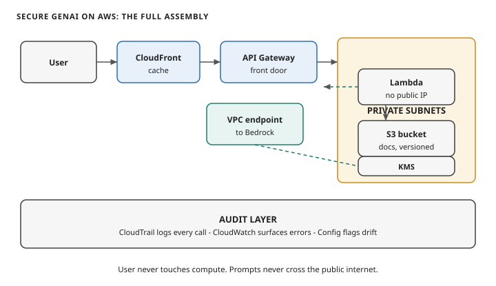
Secure GenAI architecture: user to CloudFront to API Gateway to Lambda in private subnets, reading versioned encrypted S3 documents and calling Bedrock through a VPC endpoint, with CloudTrail, CloudWatch, and Config auditing.
Read left to right. The user reaches CloudFront and API Gateway. Lambda runs in private subnets with no public IP. It reads versioned, KMS-encrypted documents from S3. It calls Bedrock through a VPC endpoint. The audit layer logs everything.
Next: the exam decision trees.
Numbers and limits
Volatile. Quotas, model IDs, and prices move. The prose below was checked against AWS documentation on 2026-09-28. Re-check any quota or price before exam day.
This section states no service quota. Do not memorize a number the text does not give you.
Worked scenario
Work “15. Putting it together: a GenAI app on AWS” against one stem. Name the constraint (freshness, citation, latency, a cost ceiling, or a control that must block) and pick the smallest managed mechanism that meets every constraint.
Exam trap
Read it bottom to top, the way the exam does. The user never touches your compute directly: CloudFront and API Gateway stand in front.
Outer layer Claim
16. Exam decision trees
The knowledge is built. This chapter compresses it into quick-reference rules.
Retrieval-augmented generation keeps facts outside the weights. The model answers from chunks it can cite.
Original diagram. The flow follows Amazon Bedrock Knowledge Bases: ingest, chunk, embed, retrieve, generate.
Ingestion loads documents from a source such as S3.
Chunking splits them. The strategy is fixed on the data source.
One embedding model writes vectors into a store.
A query embeds with the same model and fetches near chunks.
The model answers from those chunks and returns citations.
Mechanism
The knowledge is built. This chapter compresses it into quick-reference rules.
Quick-reference rules. When the scenario gives you the constraint on the left, reach for the answer on the right.
1 Cheapest storage, rarely read, keep for years : S3 Glacier Deep Archive plus a lifecycle rule. Watch the 180-day minimum.
2 Share one private file briefly : Presigned URL, not a public bucket.
3 EC2 needs AWS access : IAM role (instance profile), never access keys.
4 Human needs temporary admin : Assume a role, not a second user.
5 Cap what a team can ever do : Permissions boundary.
6 Private subnet needs patches : NAT gateway in a public subnet.
7 Block one IP fast : NACL deny rule (security groups cannot deny).
12 SQL that must scale itself : Aurora; key-value at any scale: DynamoDB.
13 Run code on an event, seconds to minutes : Lambda; longer than 15 minutes: not Lambda.
14 Who did what : CloudTrail; is it healthy : CloudWatch; is it configured right : Config.
15 Fan-out to many consumers : SNS; buffer between services : SQS.
16 Every decryption must be logged : SSE-KMS with a customer-managed key.
17 Identical environments, no click-ops : CloudFormation.
Numbers and limits
Volatile. Quotas, model IDs, and prices move. The prose below was checked against AWS documentation on 2026-09-28. Re-check any quota or price before exam day.
This section states no service quota. Do not memorize a number the text does not give you.
Worked scenario
Work “16. Exam decision trees” against one stem. Name the constraint (freshness, citation, latency, a cost ceiling, or a control that must block) and pick the smallest managed mechanism that meets every constraint.
Exam trap
Exam trap: a real service used for the wrong job, or a heavier ladder rung than the stem requires. Match the verb in the stem — cite, act, block, cheapen, or measure — to one mechanism here.
Outer layer Claim
Final rapid-fire
Final rapid-fire is a decision you can name in one sentence before you look at the options.
Read every major topic from the outside in. The outer sentence is the claim. The core is the mistake the exam expects you to make.
Original diagram for this treatise.
Name what the thing is and why AWS shipped it.
Follow the mechanism one hop at a time.
Separate stable ideas from quotas and prices.
Run one scenario with every constraint visible.
State the trap before you look at the options.
Mechanism
A Lambda function in a private subnet times out calling DynamoDB. The security group allows all outbound. What is the most likely missing piece, and the cheapest fix?
A)The function needs a public IP; move it to a public subnet.
B)There is no route to DynamoDB; add a gateway VPC endpoint for DynamoDB.
C)DynamoDB needs a NAT gateway; add one to the private subnet.
D)The IAM role needs dynamodb:* on all resources.
Correct: B. Private subnets have no internet route; a gateway endpoint gives private, free access to DynamoDB.
A is wrong: public subnets expose the function for no benefit. C is wrong: a NAT gateway works but costs money per hour and per GB; the endpoint is free. D is wrong: this is a network timeout, not an access-denied error.
Which two statements about security groups and NACLs are true? (Select two.)
A)Security groups are stateful; return traffic is automatically allowed.
B)NACLs support explicit deny rules evaluated in rule-number order.
C)Security groups attach to subnets and NACLs attach to instances.
D)NACLs are stateful and security groups are stateless.
Correct: A and B. Security groups attach to the instance and remember connections. NACLs attach to the subnet, check both directions, and can deny.
C is wrong: it swaps the attachment points. D is wrong: it swaps statefulness.
Training data must be kept 7 years, is read heavily for 30 days after creation, then almost never. Deletes before 90 days must be impossible for compliance. Which design?
A)S3 Standard with a lifecycle rule to Glacier Flexible Retrieval after 30 days, plus S3 Object Lock in compliance mode.
B)S3 Standard-IA with versioning only.
C)EBS volumes snapshotted nightly.
D)S3 Glacier Deep Archive from day one with MFA Delete.
Correct: A. Hot for 30 days, cheap archive after, Object Lock makes early deletion impossible even for root.
B is wrong: no archive tier and no deletion protection. C is wrong: EBS snapshots are not a 7-year data lake. D is wrong: Deep Archive from day one punishes the heavy first-30-days reads with retrieval fees and delays.
A company wants developers to log in once with the company identity provider. They need short-lived access to three AWS accounts, with no long-term access keys anywhere. Which service?
A)IAM users with cross-account roles.
B)IAM Identity Center.
C)Cognito user pools.
D)AWS Directory Service alone.
Correct: B. Identity Center is the SSO entry point for workforce access across accounts, replacing IAM users for humans.
A is wrong: cross-account roles help but still leave long-term IAM users behind. C is wrong: Cognito is for your app's end users, not your workforce. D is wrong: a directory alone does not federate into AWS accounts.
An SQS queue feeds image-processing workers. Some messages fail repeatedly and block the queue. What is the standard fix?
A)Delete the queue and recreate it daily.
B)Increase the visibility timeout to 12 hours.
C)Attach a dead-letter queue and set a max receive count.
D)Switch the queue to SNS.
Correct: C. After N failed receives, the poison message moves to the DLQ for inspection instead of clogging workers.
A is wrong: destroying the queue loses messages. B is wrong: a longer timeout just delays the same failure. D is wrong: SNS is push fan-out, not a work buffer with retries.
Numbers and limits
Volatile. Quotas, model IDs, and prices move. The prose below was checked against AWS documentation on 2026-09-28. Re-check any quota or price before exam day.
This section states no service quota. Do not memorize a number the text does not give you.
Worked scenario
Each question in this section is the worked scenario. Read the last sentence of the stem first. That sentence is the constraint.
Exam trap
Exam trap: a real service used for the wrong job, or a heavier ladder rung than the stem requires. Match the verb in the stem — cite, act, block, cheapen, or measure — to one mechanism here.
Outer layer Claim
Go deeper
Two links worth your time. The AWS certification wiki's Cloud Practitioner page keeps a maintained minimum-viable path.
Identity, encryption, network path, and audit are different controls. One of them does not replace the others.
Original diagram. Service roles follow the AIP-C01 exam guide in-scope list: IAM, KMS, Amazon VPC, AWS PrivateLink, CloudTrail, CloudWatch.
IAM decides who may call the API. A guardrail does not.
KMS encrypts data at rest where the service supports a customer key.
A VPC endpoint keeps the call off the public internet.
CloudTrail records who called which API.
Invocation logs and CloudWatch hold the prompt content and the block metrics.
Mechanism
Two links worth your time. The AWS certification wiki's Cloud Practitioner page keeps a maintained minimum-viable path. One video course plus practice exams, with honest notes on what each resource covers. On Reddit, r/AWSCertifications has years of "I passed CLF-C02" posts naming the exact trap questions people hit. Search it for any service in this volume before exam day.
You now know the ground AIP-C01 stands on. Regions place you, IAM guards you, S3 keeps everything, EC2 and Lambda compute it, VPC networks it, KMS seals it, and CloudFormation rebuilds it anywhere. The main volumes build GenAI on top of exactly this.
Volatile. Quotas, model IDs, and prices move. The prose below was checked against AWS documentation on 2026-09-28. Re-check any quota or price before exam day.
This section states no service quota. Do not memorize a number the text does not give you.
Worked scenario
Work “Go deeper” against one stem. Name the constraint (freshness, citation, latency, a cost ceiling, or a control that must block) and pick the smallest managed mechanism that meets every constraint.
Exam trap
Two links worth your time. The AWS certification wiki's Cloud Practitioner page keeps a maintained minimum-viable path.